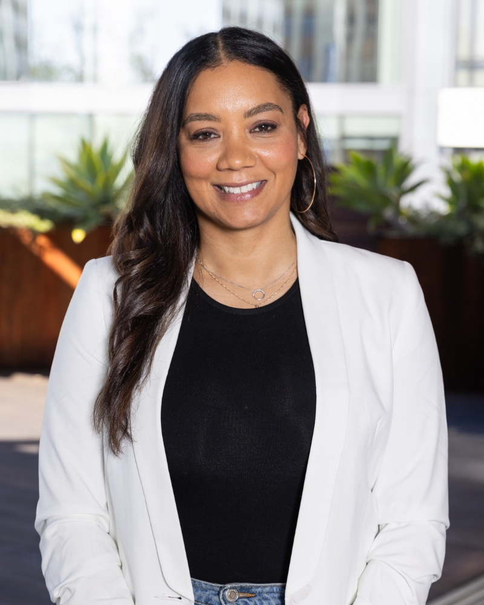
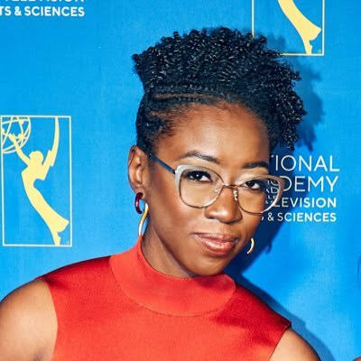

Dr. Allison Scott

Dr. Allison Scott is definitely someone
worth learning about. She is the CEO of
the Kapor Foundation, which focuses on
giving access and opportunities to those
who need them. Her work focuses on making
technology fields more equitable and
addressing racial and economic inequality.
She has also worked to make computer science
education more accessible, especially
for women of color.
Learn More:
Dr. Joy Buolamwini

Dr. Joy Buolamwini is another inspiring
figure in the technology industry.
She is the founder of the Algorithmic
Justice League, an organization that
focuses on identifying and addressing
bias in artificial intelligence.
Through her research, she discovered
that some facial recognition systems
were less accurate when identifying
women with darker skin tones.
Her work demonstrates how race and
gender can intersect to create
inequality in technology.
Learn More: